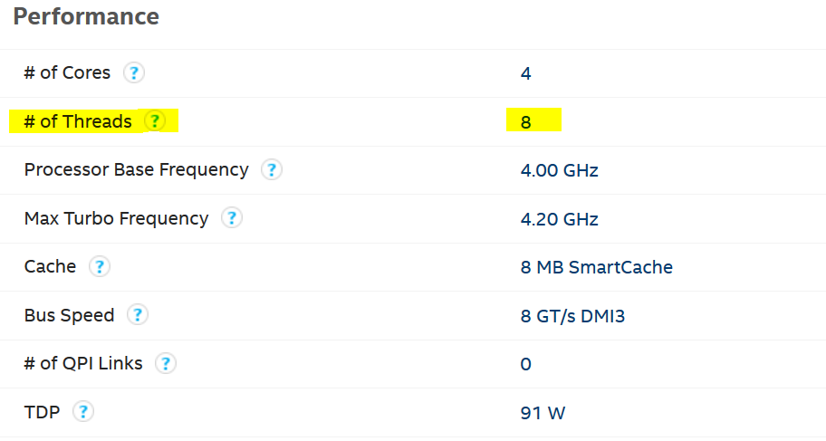
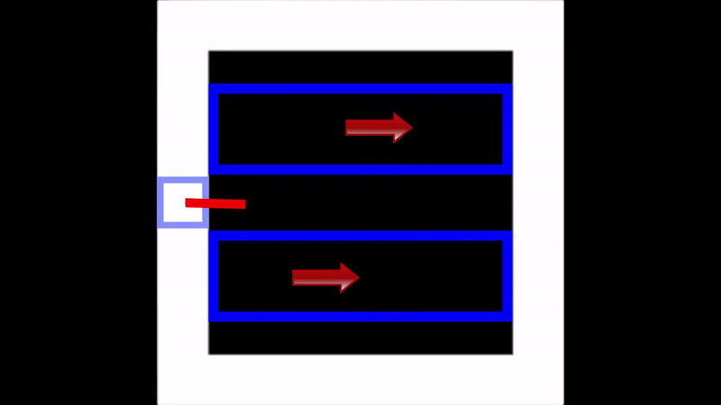
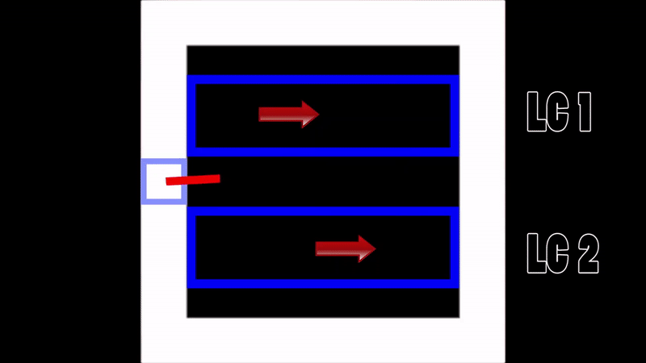
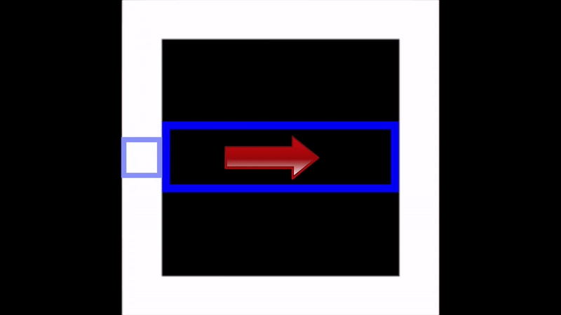
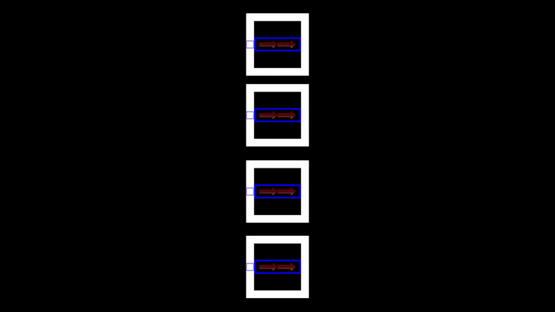

Myten
Hyperthreading, mange tror det betyr at man får dobbelt så mange kjerner. Det vil si at hvis en i7 6700k har 4 kjerner og hyperthreading, så har den 8 kjerner. Det kommer jo til og med opp i «hwinfo64». Så hvorfor får vi ikke dobbelt så mye datakraft? Det er fordi hyperthreading ikke magisk dobler antallet kjerner, hvis jeg putter i7en min under et mikroskop ser man fortsatt bare 4 kjerner. Vil du vite mer om hyperthreading? Skroll ned.

Hva er det?
Hyperthreading er en proprietær Intel teknologi som bruker planleggeren og arbeidsmengden på en måte for å parallellisere prosesser. På norsk betyr det at planleggeren mer effektivt fordeler arbeidsoppgavene som sendes til logiske kjerner for å bli prosessert. 2 av dem lager en 1 fysisk kjerne.

Logiske kjerner
«Logiske kjerner» er PC-en sin måte å gjenskape noen av CPU-en aspekter av CPU-en sin arkitektur. Ved å implementere hyperthreading på en fysisk kjerne vil to logiske kjerner bli oppdaget av nesten alle moderne operativsystemer. Dette gjør at data blir strømlinjeformet på en fordelaktig måte. Når en stor mengde data blir sendt gjennom CPU-en eller rørledningen vil planleggeren mer effektivt fordele oppgavene mellom de to logiske kjernene.

The catch
Så her er greia. Siden bare en kjerne styrer over de logiske kjernene, kan bare en rørledning sende informasjon gjennom for å bli prosessert. Man trenger to fysiske kjerner for å prosessere to rørledninger med data samtidig.

Men det er fortsatt bra
Siden planleggeren nå ser at det er to rørledninger kan den jakte på mer data å prosessere for LC2 samtidig som det går data ned LC1. Når dataen i LC2 nærmer seg sluttpunktet har dataen i LC1 allerede blitt utført. Sånn går det i en loop.

Uten hyperthreading
I et scenario uten hyperthreading, for eksempel i en i5 6600k som har 4 kjerner og 4 logiske kjerner vil ikke data alltid være forberedt av planleggeren i tide, noe som kan føre til at kjernen venter på mer. Når man ikke har hyperthreading kan ikke planleggeren forberede data mens den sender data, noe som fører til forsinkelser og lag.

Oppsummering
Så hyperthreading dobler ikke antallet kjerner, det bare lurer planleggeren til å tro at det er dobbelt så mange rørledninger enn det det egentlig er. For en 6600k med bare 4 kjerner kan planleggeren bli overbelastet med informasjon, men for en i7 6700k med 4 kjerner og 8 logiske kjerner kan planleggeren sende arbeidsoppgaver mer effektivt. Men husk at du fortsatt bare har 4 kjerner, og i7-en er ikke dobbelt så rask som i5 på grunn av hyperthreading. Animasjonen under viser en i5 6600k
